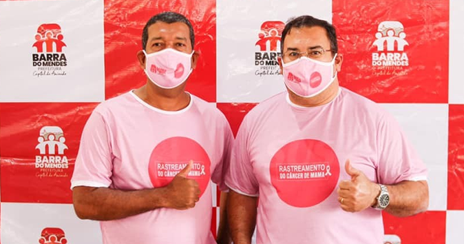

O governo de Tonho de Napo ficou marcado por um legado de destruição e desorganização administrativa que ainda impacta a atual gestão municipal. Durante seu mandato, o ex-gestor contratou servidores considerados despreparados e ineficientes para funções públicas essenciais. Agora, esses mesmos indivíduos têm atuado para desestabilizar o governo atual, na tentativa de voltar ao poder.

Essa atuação, segundo fontes ligadas à nova administração, tem provocado grande desgaste. Ações e projetos da atual gestão vêm sendo constantemente desvalorizados e alvos de ataques, tanto em redes sociais quanto em conversas de bastidores. Além disso, a propagação de fake news e a criação de perfis falsos no Instagram têm sido usadas como estratégia para enfraquecer a imagem do governo.
A atual administração afirma que, apesar das dificuldades herdadas e da pressão de grupos contrários, segue empenhada em reconstruir o município, resgatando a qualidade dos serviços públicos e devolvendo dignidade à população. Ainda assim, reconhece que combater a desinformação e restaurar a confiança da comunidade exigirá tempo e muito trabalho.